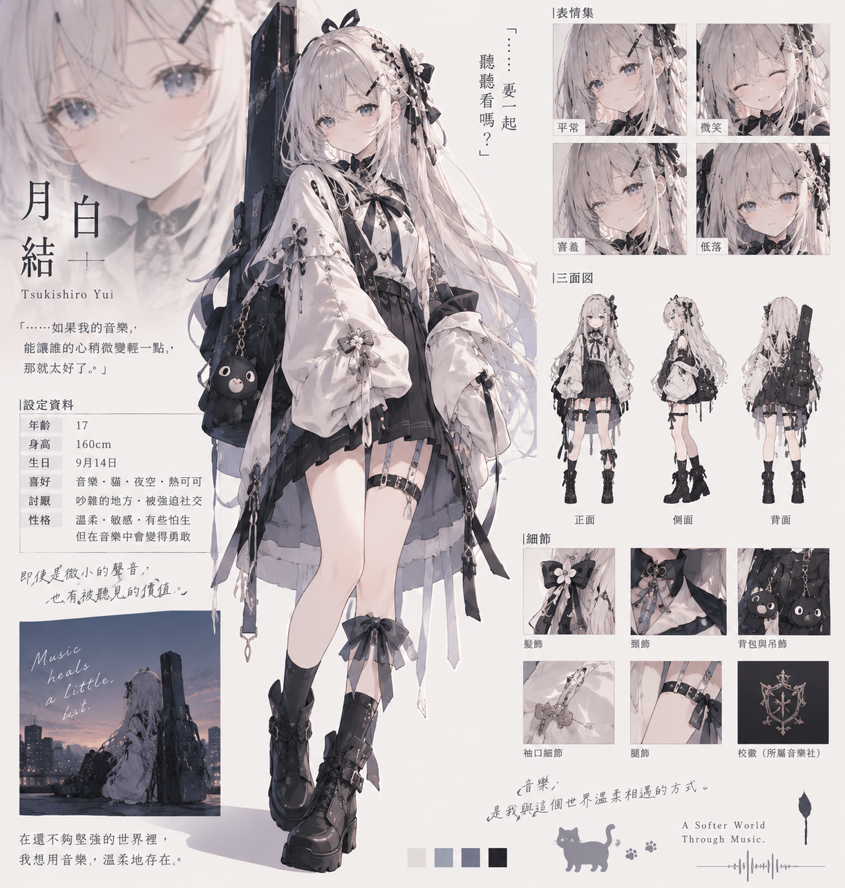

☾
月白花徑
SAKURA SPRINT
01
—
月下花徑
Ⅱ
♪
A NOCTURNE IN BLOOM
月白
結
TSUKISHIRO YUI
月光落在髮梢，旋律藏進風裡。
陪月白結，跑過今夜的花徑。
開始旅程
↗
↻
細看月白結
角色設定圖
↗
←
→
轉線
·
SPACE
跳躍
A QUIET MOMENT
讓風等一等
繼續旅程
↗
重新開始
返回角色
關閉 ×

原始角色設定 · 本次製作依據
←
↑ 跳躍
→
月白結
TSUKISHIRO YUI
正面
側面
背面
臉部特寫
示範跑步
拖曳，細看每個角度
返回花徑 ↗